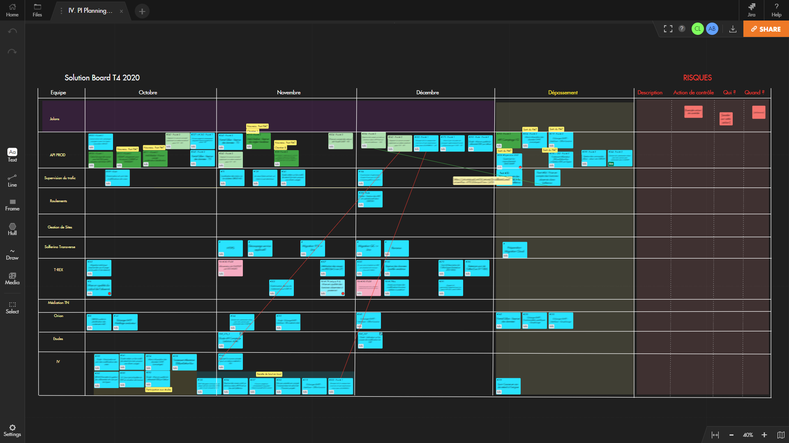
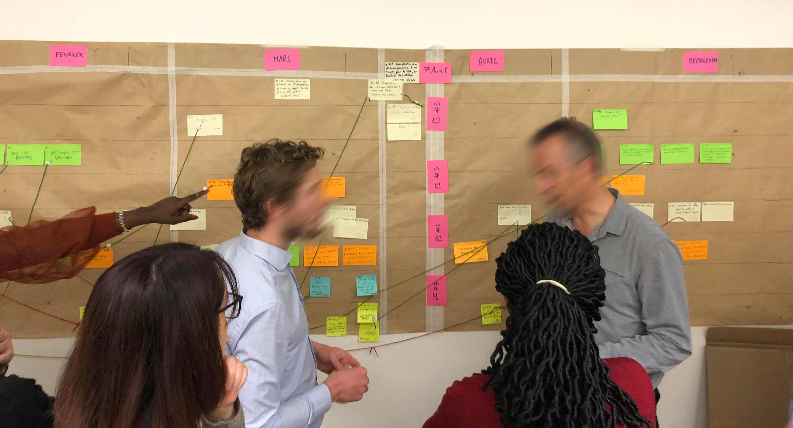
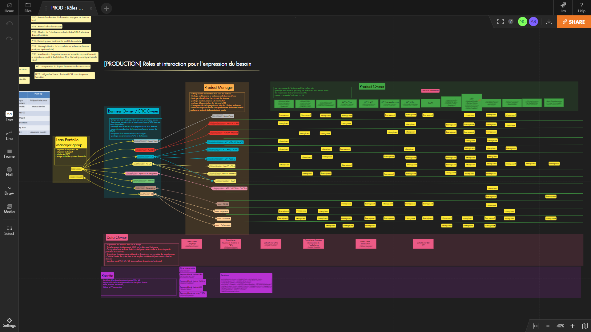

Comment les leaders de la transformation de Transilien ont conçu un framework d'Agilité à l’échelle sur-mesure pour mieux s’adapter aux enjeux de la collaboration à distance
Partie intégrante de la SNCF, l’entreprise ferroviaire publique française, Transilien est le nom du réseau de trains de banlieue desservant exclusivement les gares d'Île-de-France. Cette division emploie environ 44 000 personnes et gère 15 lignes ferroviaires, dont 2 en partenariat avec la RATP, ainsi que quelques lignes de tramway et de bus.
Bien que Transilien ne couvre qu’une seule région, le réseau qu’il gère représente, à l’échelle de la France, 7 voyageurs ferroviaires sur 10, et la moitié de la distance parcourue par tous les trains de passagers, soit plus de 3,5 millions de personnes et 5 200 trains, chaque jour.
En 2016, la DSI de Transilien a entrepris un ambitieux plan de transformation agile dont l’objectif est, en quelques années, de déployer les pratiques agiles au sein de tous les projets informatiques et techniques. Cette équipe a été mise en place et déployée par Pierre Watier, responsable Agilité & Innovation de la DSI. Aujourd’hui, une équipe composée de 5 Coachs Agiles, un coach en testing agile, un coach en organisation et deux consultants en Design Thinking accompagne les 400 collaborateurs de la DSI ainsi que les acteurs métiers des directions opérationnelles de Transilien, les aidant à choisir les méthodes adéquates et à les mettre en œuvre.
Maxime Bonnet, Coach Agile chez CGI, groupe international de conseil en technologie de l’information, est l’un des membres de cette équipe. Depuis 4 ans, en tant que Coach Agile, il accompagne le changement au sein de la division ‘production ferroviaire’ de la DSI. Celle-ci a trois principales missions :
- Préparer les plans de transport annuels et piloter le trafic au quotidien ;
- Gérer la disponibilité des trains, des conducteurs et autres personnels, de façon à ce que les trains soient prêts à rouler au bon moment; et
- Monitorer le trafic du réseau ferroviaire et fournir aux autorités de la région Ile-de-France les indicateurs de performance adéquats.

“Le fait de collaborer directement avec les équipes projet et de prendre des décisions importantes tous ensemble a naturellement conduit le senior management à réaliser des arbitrages cruciaux, de façon totalement transparente.”
Maxime accompagne et supervise un programme qui implique 180 collaborateurs, répartis dans 13 équipes projet différentes. A l’exception d’une grande équipe responsable du déploiement d’un ERP, toutes ces équipes projets s'inscrivent dans un framework Agile (Scrum, Kanban, ou Extreme Programming).
Chaque équipe est composée de 5 à 9 personnes, incluant un Product Owner (provenant des métiers), un Proxy Product Owner (de la DSI), un Scrum Master et quelques développeurs. Celles-ci travaillent sur des projets allant du développement d’applications client-lourd à la construction d’outils de reporting exploitant d’importantes quantités de données, en passant par la fourniture d’APIs dans le cadre de leur architecture Microservices.
Depuis la mise en place des pratiques Agiles, ils ont réalisé, à date, 8 sessions de PI Planning : 4 colocalisées et 4 à distance. Ces sessions ont lieu tous les trois mois, soit 3 sprints de quatre semaines chacun.
Avant l’impact du COVID-19, 70 collaborateurs se retrouvaient à Paris, tous les trois mois, pour une journée consacrée au PI Planning. Déjà à l’époque, pour éviter de solliciter les équipes pendant deux jours entiers, avec toutes les contraintes logistiques que cela représente, Maxime et son équipe avaient mis en place un processus dans le cadre duquel, deux semaines avant la date du PI Planning, les features envisagées au cours du prochain incrément étaient partagées aux équipes. Cela leur permettait de prendre le temps de discuter de ces features et de les estimer en amont et, donc, d’avoir les idées claires quant à la meilleure façon de les implémenter.
De ce fait, préparer le PI Planning à l’avance permettait aux équipes d’être plus efficaces lors de la journée de travail qui, elle, était dédiée à la construction du Solution Board du programme. “Le processus que nous avons mis en place a permis au senior management de s’impliquer et de s'engager davantage dans la définition de la stratégie. Le fait de collaborer directement avec les équipes projet et de prendre des décisions importantes tous ensemble les a naturellement conduits à réaliser des arbitrages cruciaux, de façon totalement transparente”, explique Maxime.
“Pour prévenir le phénomène de fatigue communicationnelle, nous devions trouver une façon d’exploiter plus efficacement le temps et l’espace."
Quand le premier confinement fut imposé en mars, il ne restait que trois semaines à Maxime et son équipe pour préparer la prochaine session de PI Planning. Il leur fallait trouver rapidement une solution. Pour Maxime, “il aurait été impossible d’entretenir la pleine attention des participants au cours d’une journée entière d’ateliers à distance. Par conséquent, pour prévenir le phénomène de fatigue communicationnelle, nous devions trouver une façon d’exploiter plus efficacement le temps et l’espace.” Ils ont alors décidé d’éclater la journée traditionnelle de PI Planning en une série de courts ateliers, répartis sur une période de deux semaines.
Ainsi, deux semaines avant la session de PI Planning dans son nouveau format raccourci, les features envisagées pour le prochain incrément sont partagées aux équipes, qui les découpent en grosses user stories afin de les évaluer et de les estimer. Une fois ce travail terminé, chaque équipe présente son Project Board de l’incrément à venir. Les user stories y sont disposées suivant un axe horizontal temporel, avec pour colonnes : sprint 1, sprint 2, sprint 3 et au-delà.
La veille du PI Planning, une sorte de ‘speed dating’ est organisée entre le Release Train Engineer (RTE), accompagné des Coachs Agiles, et le Product Owner de chaque équipe projet. Le RTE recueille les Project Boards de chaque équipe et synthétise leurs plans au sein du Solution Board du programme, ce qui lui permet d’identifier les dépendances entre les user stories des différentes équipes et de prévenir les éventuels engorgements.
Cette première version du Solution Board est, ensuite, présentée à l’Epic Owner, aux Business Owners et aux Product Managers transversaux du programme, afin de définir les priorités et ajuster le plan. Enfin, la version finale du Solution Board est présentée à l’ensemble des 180 collaborateurs du programme. “Nous avons construit un véritable framework d’Agilité à l'échelle sur-mesure, inspiré principalement par SAFe® mais aussi par LeSS et Scrum-of-Scrum”, se réjouit Maxime.

Les avantages et inconvénient du PI Planning à distance
Maxime se considère lui-même comme un fervent supporter du post-it. En effet, il apprécie la façon dont les post-it poussent les participants à s’impliquer et porter la responsabilité de leurs propos. C’est la raison pour laquelle, en passant par les outils de collaboration digitaux, il trouve que les rétrospectives ont perdu de leur impact. Cependant, tout le monde n’appréciait pas l’utilisation du post-it, notamment certains seniors managers qui le considèrent comme un outil infantilisant.
En utilisant un tableau virtuel collaboratif comme Draft, Maxime a observé une augmentation de la participation au cours des sessions de PI Planning, en particulier parmi les seniors managers. Par ailleurs, Draft a permis aux équipes de mieux documenter la prise de décision et archiver les artefacts de management visuel. Finalement, le PI Planning à distance est considéré comme une expérience plus satisfaisante et productive par les équipes du programme. En offrant à chacun l’opportunité de préparer la session à l’avance et, donc, de réfléchir en profondeur aux problèmes et aux solutions envisagées, le résultat final s’en est trouvé amélioré.
Toutefois, Maxime souligne l’importance des sessions physiques de PI Planning qui ont eu lieu avant le confinement. Elles ont, en effet, permis de créer la dynamique de groupe primordiale aux succès des sessions virtuelles. C’est pourquoi, dans le but de maintenir la cohésion des équipes et le haut niveau d’efficacité du processus, Maxime espère pouvoir prochainement organiser un PI Planning colocalisé.